Results from our 3 applications that we have developed for optogenetics. All organic.
Barchitecture is a 3D printing technology based on 2 suspended colonies of E. Coli cells that display on their surface one of the 2 binding partners that form a strong covalent bond: SpyTag or SpyCatcher. By using light in the form of lasers, one ensures that only in the desired location in the cell population covalent bonds will be formed between bacteria. Once a 3D structure is formed, light induces the production of PHB, which accumulates in the form of granules inside cells. Cells then use a type-2 system to secrete the PHB, with the granules being cross-linked into a solid shape by a photoinitiator.
In our project, we decided to focus on designing and testing cell adhesion systems that are light-activated.
Natural disasters
Space Exploration
Medical implants
Considering the increasing frequency of natural disasters, having a cheap and immediate way to generate structures could be used to temporarily shelter people, seal leaks, or bridge over flooded areas. Microorganisms can be also engineered to simultaneously detect and/or feed off hazardous waste and help clean up septic systems.
We developed (i) transcriptional and (ii) post-translational light switches for the induction of cellular aggregation. The final engineered cells would be able to respond to the light stimuli and assemble into desired structures that can simultaneously produce and bind a desired polymer.
Using the blue light inducible promoter PBlind , we aim to use blue light (6hr, 475nm) to induce the transcription of Intimin, a cell surface protein, fused to either SpyTag (13 amino acids) or SpyCatcher (138 amino acids, 15kDa). SpyTag and SpyCatcher are two binding partners that come from CnaB2 (immunoglobulin-llike collagen adhesin domain) of the FbaB protein, found in the invasive strains of S. pyogenes. SpyTag contains a reactive aspartate that forms a strong isopeptide bond with a reactive lysine residue in SpyCatcher when in close proximity.
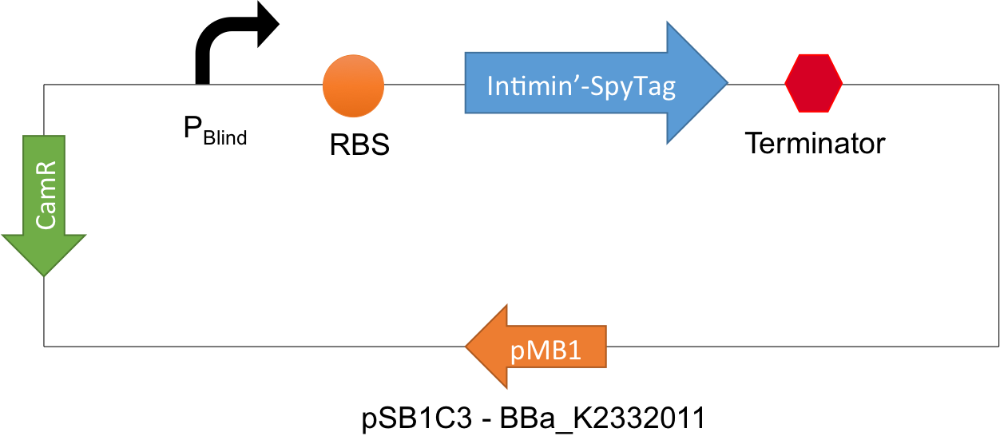 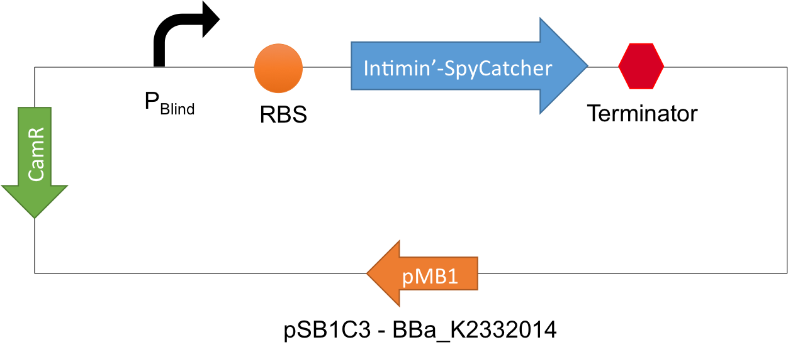Once a mixture of cells are light induced to display SpyTag or SpyCatcher on their cell surface, they are expected to aggregate. Similar to lithography, structures would be generated layer by layer from a flat surface by exposing a particular radius with blue light.
Designers note: after analysing multiple cell surface display proteins, we opted for Intimin (EaeA intimin) as it has shown to display passenger proteins of similar size to SpyCatcher and it had not been characterised by iGEM teams before. Other cell candidates considered include: ice nucleation protein, PgsA and OmpC.
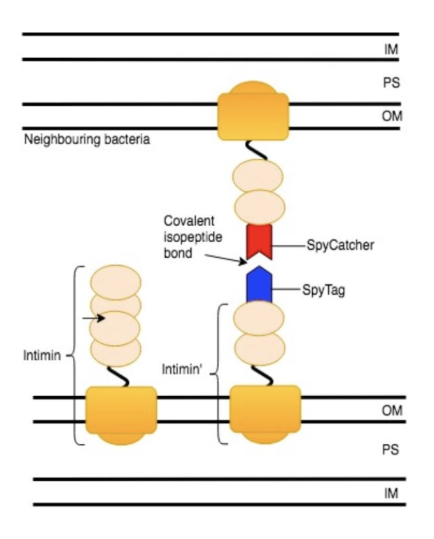 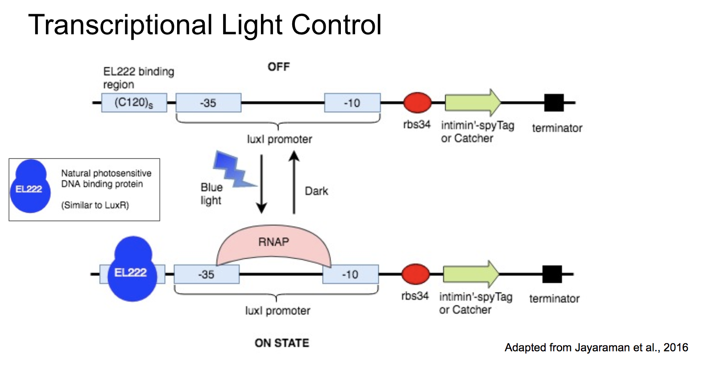Designed Experiments
A) Represents two cell lines expressing either intimin’-SpyTag or intimin’-SpyCatcher fusion proteins. Cells harbouring either construct under the control of a constitutive promoter would have either been mixed together or mixed with WT cells (control) (15min) or not mixed and passed through a particle sizer with a range of aperture sizes (0.4µm - 40µm) to compare aggregate sizes. As secondary experiments and for visual purposes we would have also incubated cells expressing Intimin-SpyTag with purified GFP-SpyCatcher, Intimin’-SpyCatcher with purified GFP-SpyTag and Intimin-GFP-SpyTag with Intimin-SpyCatcher cell lines for 15min and visualize cell-protein binding and cell-cell interaction via fluorescence microscopy. We also included a His-Tag within all SpyCatcher construct variants to enable in-vitro analysis of complexes formed with SpyTag variants.
B) Represents two cell lines expressing either intimin’-SpyTag or intimin’-SpyCatcher fusion proteins pre and post light induction. Aggregation experiments described in A) would have been repeated after replacing the constitutive promoter with PBlind , blue-light inducible promoter and transforming cells with EL222 (blue light inducer) under a constitutive promoter (C). Cell aggregation and fluorescence experiments would have been carried out with cells grown overnight under darkness or under blue-light and in the presence or absence of the EL222 construct.
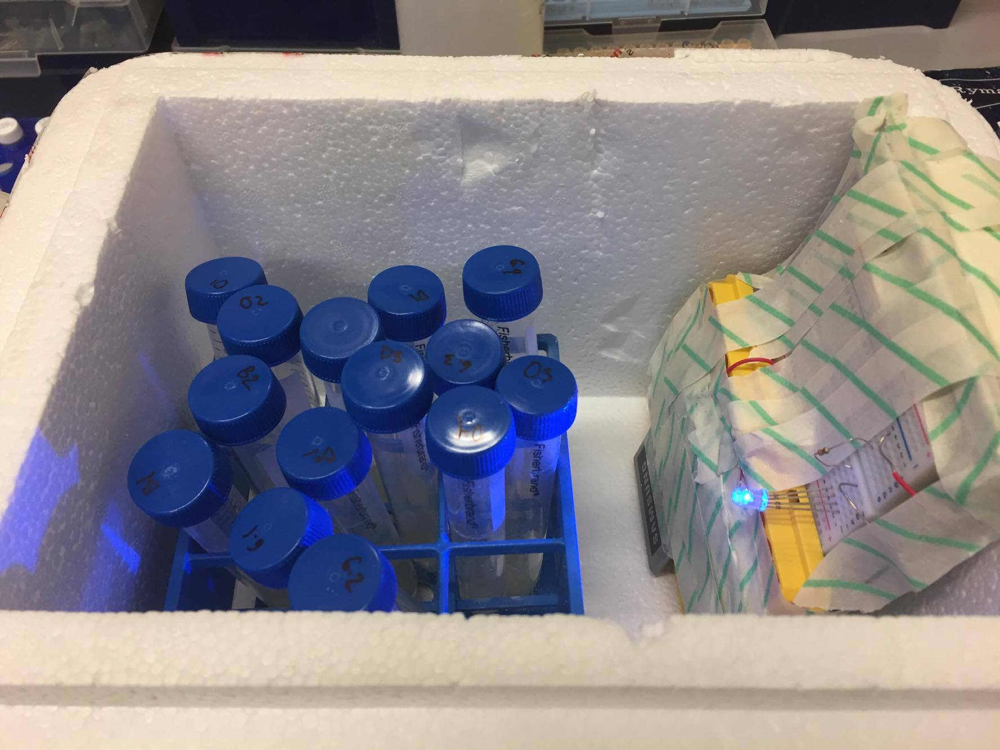 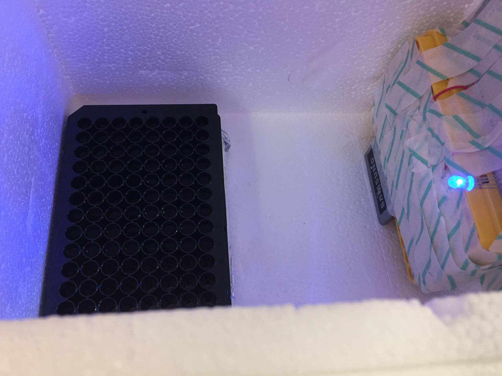 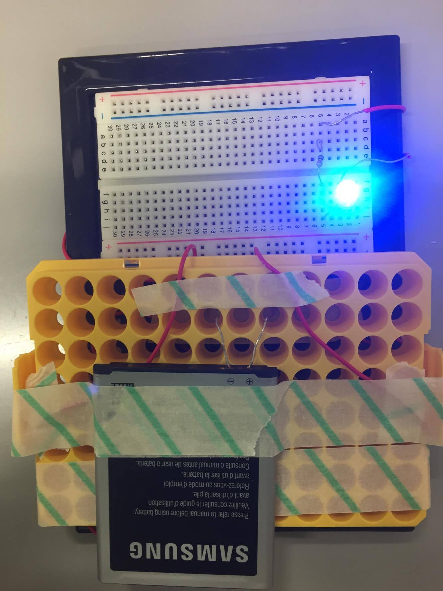 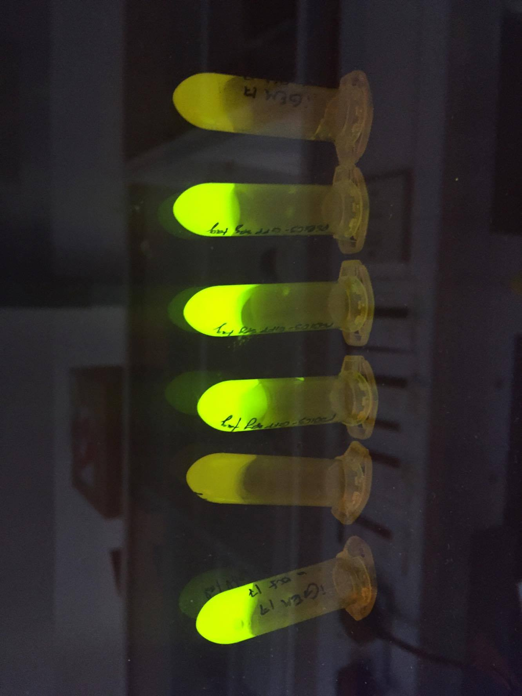
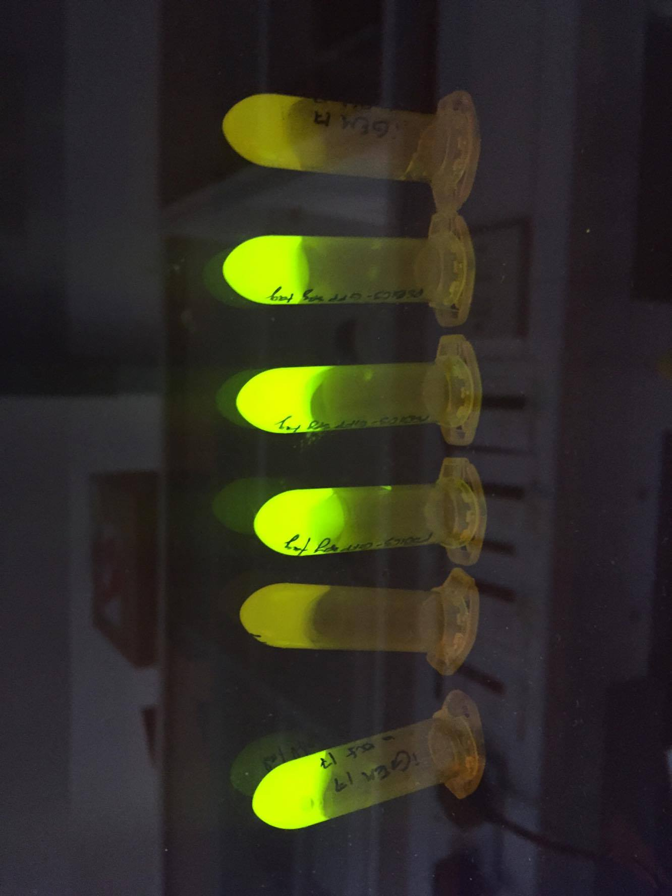
As a more immediate induction of cell aggregation, we aimed to develop a post-translational light switch in which cells are constitutively expressing either Intimin’ fusion proteins with SpyTag or an inactive version of SpyCatcher. Only upon light exposure, SpyCatcher is able to bind SpyTag resulting in a much faster response than transcriptional induction. This is achieved by incorporating a photocaged unnatural amino acid (UAA), Ne-methyl-L-lysine, in place of the reactive lysine in SpyCatcher required for the covalent bond formation with the SpyTag aspartate residue. Upon exposure to UV light (20min, 365nm), the “cage” group in the unnatural photocaged amino acid is cleaved off revealing the native amino acid and a biologically active protein. This approach also adds a layer of bio-containment as cells will only function when externally supplied with UAA.
To achieve this, we introduced an amber stop codon (TAG) in place of the reactive Lys 31 residue (Lys31X) in SpyCatcher. Amberless E. coli cells also have to express pyrrolysyl tRNA (pyIT/tRNAPylCUA) from M. mazei and pyrrolysyl-tRNA synthetase from M. barkeri and the UAA must be supplemented in the media. The pyrrolysyl-tRNA synthetase catalyses the acylation of the suppressor tRNACUA with the UAA. During translation, the UAG amber codon in the mRNA is recognized by the acylated tRNACUA and the UAA will be added to the growing polypeptide chain. The orthogonality of this system has shown to work in both E. coli and mammalian cells.
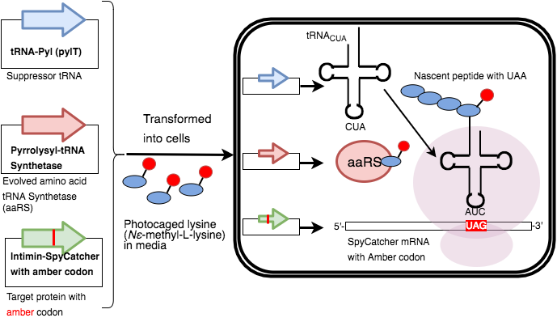 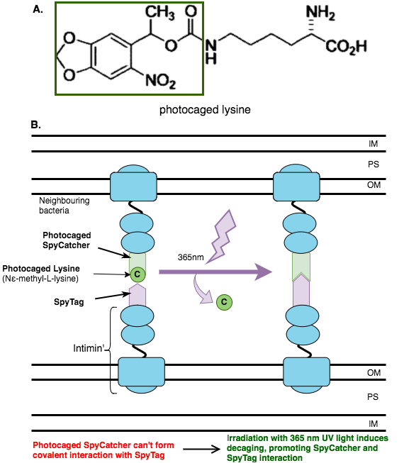
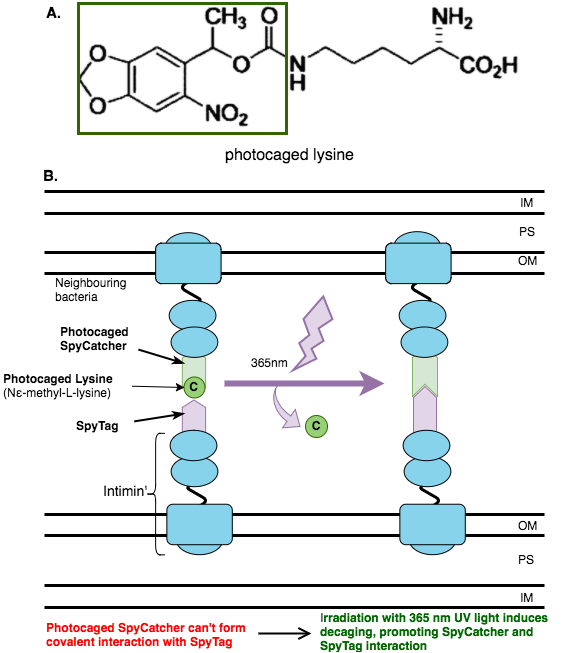
Figure 2. Post-translational light induction of cell aggregation. A) Represents two cell lines expressing constitutively either intimin’-SpyTag or the photocaged version of intimin’-SpyCatcher fusion proteins. Cells harbouring either construct would have either been mixed together or mixed with WT cells (control) or not mixed and exposed to UV light (365nm) or not exposed for 25min-1hr and then passed through a particle sizer with a range of aperture sizes (0.4µm - 40µm) to compare aggregate sizes. As secondary experiments and for visual purposes we would have also incubated cells expressing Intimin’-SpyTag with purified photocaged GFP-SpyCatcher, photocaged Intimin’-SpyCatcher with purified GFP-SpyTag and Intimin-GFP-SpyTag with photocaged Intimin-SpyCatcher cell lines pre and post photo-lysis (365nm) for 25min-1hr to visualize cell-protein binding and cell-cell interaction via fluorescence microscopy. We also included a His-Tag within all photocaged SpyCatcher construct variants to enable in-vitro analysis of complexes formed with SpyTag variants.
Bacteria has been widely used for the production of biomaterials to generate sustainable and eco friendly bricks, bioplastic products, items of clothing as well as “living materials” by incorporating nanoparticles into biofilms. With Barchitecture we can light-induce cellular 3D structural arrangements while producing, binding or degrading biomaterials such as PHA or silicates.
Proposed design for the production, secretion and binding of PHA granules:
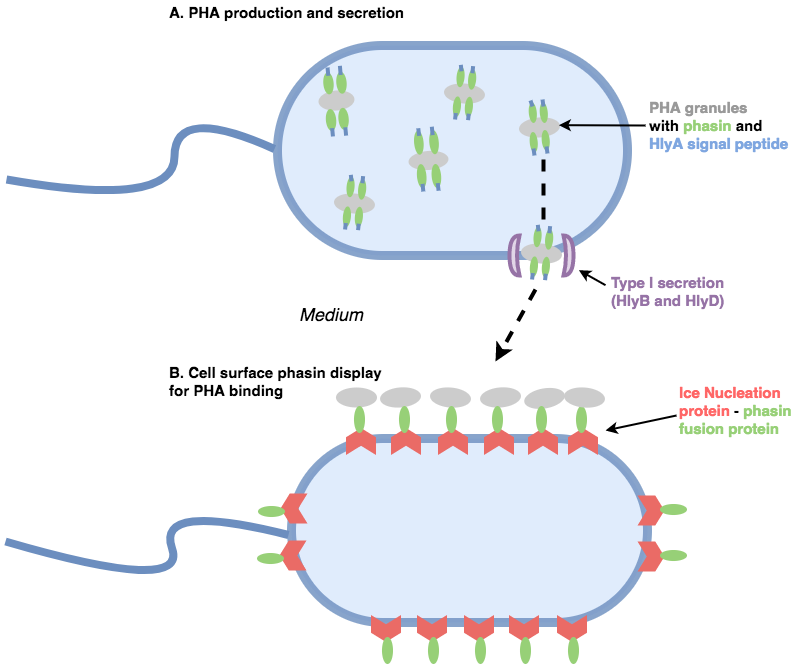Through a similar mechanism, bacteria, could be light-guided to form precise and intricate structures that can then simultaneously produce and bind biosilica. This approach will enable “growing” electronics just with the guidance of a particular wavelength of light.
Our engineered cells would form the desired 3D structure using blue light. These cells would also express photocaged (inactive) recombinant silicatein on their surface. Another wavelength of light would activate silicatein to begin the production of biosilica from water-soluble biosilica precursors added to the media. Our cells could also present ligands on their surface to attach the produced polymer to their surface.
Our wet lab data
We tested whether the promoter has any significant leakage. Also, we wanted to show that GFP cannot be expressed in the absence of EL222. This is of particular interest as the aim of LIT is to demonstrate the versatility and high precision of light control. As shown in Figure1, only J23151-GFP (positive control) had a significant difference in fluorescence compared to R0040-GFP (negative control) WT cells and the Luria Broth (LB) in both dark and Blue-light conditions. Pblind-GFP had no significantly different fluorescence level compared to the LB baseline, negative control or WT cells in either condition. This is expected, as the EL222 protein is required for blue-light inducible transcriptional activation.
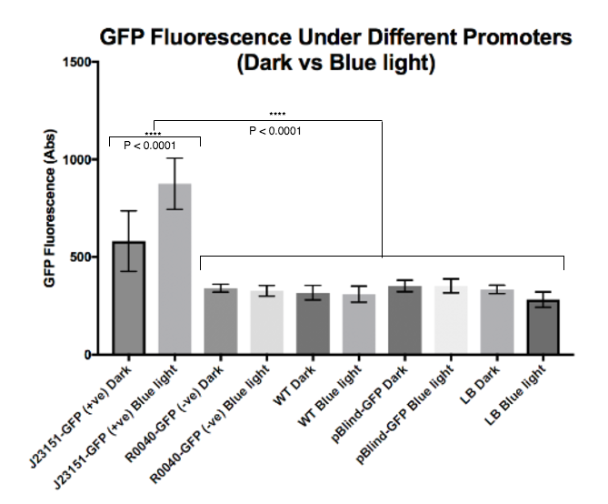Figure 1. Blue light inducible promoter (Pblind) characterisation. J23151 is a constitutive promoter, R0040 is a TetR repressible promoter (repression inhibited only by the addition of tetracycline), Pblind promoter is a fusion of EL222 (photosensitive transcription factor) binding region and the luxI promoter, where EL222 is only able to dimerize and bind the Pblind promoter upon blue light exposure, where it can then recruit RNAP and drive the transcription of genes downstream. Wild type (WT) 10beta cells were transformed with J23151-GFP (positive control), R0040-GFP (negative control) or Pblind-GFP. All cells were grown overnight at 37°C in darkness or exposed to blue light (465nm) and diluted to OD600=0.6 to record GFP fluorescence. The data represents the mean of 3 biological replicates and 4 technical replicates for each condition. Luria broth (LB) was included as a baseline for the fluorescence. Error bars represent the SD and statistical significance of **** P < 0.0001 was calculated using the Tukey's multiple comparisons test.
Instantaneous cell adhesion
Gene activation
In order to form structures cells need to form dynamic non-covalent formations in adherens junctions that allow constant remodelling of the structure while still maintaining a high degree of rigidity. The cell adhesion proteins in these junctions are stabilized via connections with the cytoskeleton, most notably actin filaments. Cells forming synthetic tissues therefore need to have the ability to form these connections rapidly in a cell culture that is dividing. In mammalian cells transcription takes around 30 min, translation (incl. mRNA export) another 30 min and further protein sorting and processing is dependent on the the type of protein. For the purpose of forming structural patterns, a photosensitive cell adhesion system therefore needs to be post-translational and instantaneous.
These challenges will not be overcome in day or even a decade but like with every difficult engineering project we need to start with an analysis of the problem and dividing it into manageable parts.
LIT’s aim is to bring us one step closer to a synthetic biology future in tissue engineering by focusing on the better characterisation of existing optogenetic tools in two scenarios: instantaneous cell adhesion and light-induced gene activation and regulation.
Currently, in the synthetic biology community we need to resolve the need for more optogenetic tools and to characterise the existing ones better.
LIT’s aim is to bring us one step closer to a synthetic biology future in tissue engineering by focusing on the better characterisation of existing optogenetic tools in two scenarios: instantaneous cell adhesion and light-induced gene activation & regulation.
While in the developing embryo cell adhesion is tightly regulated through a myriad of events that happened before and after the connection has formed, a synthetic tissue cannot rely on this stream of previous information.
Instantaneous cell adhesion is, therefore, a prerequisite for the formation of synthetic tissue structures. This instantaneous cell adhesion needs to mimic the natural mechanisms as much as possible but at the same time be photosensitive. LIT therefore came to the conclusion that the mechanism has to be post-translational because transcriptional control would require too long to form connections. Furthermore, post-translational control is mostly exerted through protein-protein inhibition which in comparison to transcriptional control results in less noise and fewer off-target activation.
Using the human body's natural way of cell adhesion we first designed a BioBrick based on the preproprotein of E-cadherin (BBa_K2332312) which we received as a gift from Prof. Stephen Price, UCL, and tested its capability of forming cell-cell adhesions via aggregation assays. E-cadherin is a calcium-dependent cell adhesion molecule that functions in the establishment and maintenance of epithelial cell morphology during embryongenesis and adulthood. During the secretory pathway the encoded preproprotein undergoes proteolytic processing to generate a mature protein.
Previously, iGEM UCSF 2011 used the extracellular domain of E-cadherin (BBa_K644000) trying to form cell connections. However, E-cadherin’s function depends not only on the presence of calcium but also on the bonding of linker-proteins like alpha and beta catenin to the cytosolic domain of E-cadherin and the actin filaments in the cortex of the mammalian cell. This ‘anchoring’ results in stable mass action and the formation of adherens junctions between cells.
LIT investigated entry points into E-cadherin’s physiology that would render the protein photosensitive. We chose the interaction between the cytosolic domain of E-cadherin and beta-catenin. By fusing the novel photocleavable protein PhoCl to the cytosolic domain of E-cadherin the interaction with beta-catenin is sterically inhibited. PhoCl is an engineered green-to-red photoconvertible fluorescent protein (Zhang et al. 2017) which we received as a gift from the Robert Campbell lab, University of Alberta, Canada. It consists of 232 amino acids that are cleaved into an ~66-residue N-terminal fragment and an ~166-residue C-terminal fragment. We designed a new BioBrick based on PhoCl (BBa_K2332311) and a BioBrick of the E-cadherin-PhoCl fusion protein (BBa_).
The fusion protein cannot form stable cell-cell connections due to the lack of interactions with the actin cortex. However, after 400 nm, violet light exposure the sterical interference of the N-terminal 66 amino acid PhoCl remnant is too weak to inhibit the formation of connections between E-cadherin and the actin cortex. Stable connections can now be formed between cells and photo-activation is achieved.
A two-step experimental approach was chosen: first test the E-cadherin preproprotein via an aggregation assay for the ability to form patterns and then test the E-cadherin-PhoCl fusion for photo-sensitivity.
Results
Precise and reliable gene activation is essential for cellular control. LIT believes that light fulfils the physical requirements to act as the tool for gene activation. Different approaches have been tried in the past to activate genes via light.
To address the limitations in other approaches based on light, researchers adapted the CRISPR-Cas9 activator system for optogenetic control. Polstein et al. 2015 showed that fusing the light-inducible heterodimerizing proteins CRY2 and CIB1 from Arabidopsis thaliana to the VP64 transactivation domain and either the N- or C- terminus of dCas9, the catalytically inactive form of Cas9 (D10A, H840A) allows induction of transcription of endogenous genes in the presence of blue light.
This light-activated CRISPR-Cas9 effector (LACE) system can easily be modified by changing the gRNA that is expressed inside the cell and therefore allows dynamic on- and off-switching of genes. Nihongaki et al. 2015 modified the LACE system by using the transactivation domain of NFκB, called p65, instead of VP64 and activated endogenous and exogenous genes in a spatiotemporally confined manner.
However, these LACE systems are limited by the exposure time to blue light and require widefield illumination of the entire cell in order to activate both components, the dCas-CIB1 and the CRY2-TF. Gene activation in these systems requires constant blue light exposure for at least 2-3 hours for measurable results.
In the context of controlling cells to form tissues, this dependence on widefield illumination presents a major problem. All cells in the tissue would be illuminated at the same time and no specificity could be achieved. It is therefore necessary to reduce the required exposure time for the activation of the LACE system and render the activation mechanism independent of widefield illumination.
Our solution is a LACE system that does not depend on heterodimerizing proteins from plants but instead on post-translational control exerted through a photocleavable linker.
The system consists of four essential units: a transmembrane domain, a photocleavable linker, dCas9 and a transactivation domain (p65, VP64, VP16).
Based on these prerequisite we designed BioBrick BBa_K2332317, a single-illumination light-activated CRISPR-Cas9 effector (siLACE) system localised to the plasma membrane of the cell via the photocleavable linker PhoCl. By localising the system to the plasma membrane the dCas9 fused to the transactivation domain is preprogrammed to not enter the nucleus and can therefore not activate any target gene inside the nucleus.
However, a single laser beam of 400 nm, violet light has been shown to be able to cleave PhoCl. After cleavage, the dCas9-TF is able to enter the nucleus, directed by attached nuclear localisation sequences. Inside the nucleus the system uses gRNAs to find the endogenous target gene and induce transcription.
The illumination radius of such the laser is many magnitudes below the dimensions of a standard mammalian cell (diameter: 10-15 µm; volume: ~4,000 µm3). This means that our siLACE system is not only able to activate genes on a single cell level but even modulate the expression via subcellular activation of only certain plasma membrane areas.
The main advantages of this siLACE system over previous designs is its independence of widefield illumination, its ‘memory’ and its ability for modulation. The system allows activation of genes solely via a single laser beam and once activated stays in an active state until the siLACE protein is naturally degraded. Additionally by changing the laser radius and the exposure time it is possible to activate different amounts of dCas9-TF’s at the same time, leading to short or long expression of the target gene.
For the construction and testing of our siLACE system we divided it into two testable components: the plasma membrane delivery system (PMDS, BBa_K2332315) and the dCas9-p65 (BBa_K2332316).
The aim of the PMDS design was to create a generally practical transmembrane protein embedded in the plasma membrane that localises a target protein to its cytosolic side and allows subsequent delocalisation via light-induction.
There are many commercially available expression vectors available that target recombinant proteins to the surface of mammalian cells. (e.g. ThermoFisher’s pDisplay). However, our PMDS is not only supposed to target a protein to the outside of the PM but also to the inside. LIT therefore had to investigate membrane trafficking in mammalian cells in depth to ensure the most efficient design.
In mammalian cells, all proteins start translation in the cytoplasm (with the exception of some mitochondrial proteins) and either undergo protein sorting during or after translation. PM transmembrane proteins first encode a signal peptide that is immediately bound by the signal recognition particle (SRP) which localises the translation complex to the endoplasmic reticulum (ER) where the translation continues through the Sec61-channel. During the co-translational import into the ER the presence or absence of special sequences of hydrophobic amino acids defines if a protein will contain one, two or multiple transmembrane domains or if the protein will be soluble (absence of hydrophobic sequence). If only one hydrophobic sequence is encoded the protein will be a single-span transmembrane protein. By default all proteins encoded enter the secretory pathway if they do not contain specialised signal sequences or signal patches, surface markers that define a proteins destination inside the cell.
We therefore had to incorporate a well characterised ER signal peptide into our PMDS, ensure the translation of a stable transmembrane domain and be cautious to not include a special signal sequence into the design.
iGEM LMU-TU Munich 2016 tested three different ER signal peptides of which ‘BM-40’ (BBa_K2170214) yielded the best result in a luciferase secretion assay. Unfortunately, this BioBrick is not in stock in the registry of standard biological parts and so we contacted iGEM LMU-TU Munich 2017 who provided us with the plasmid.
The next step was to find the most promising transmembrane domain for our PMDS. We conducted a bioinformatic analysis of different transmembrane domains from the registry as well as from Nagaraj et al. 2011 and Quadrat and Truong 2016. Both papers are from the Applied Protein Engineering lab, University of Toronto, and investigate strategies for the assembly of synthetic transmembrane proteins. The result of our analysis was that the TMD of EGFR (BBa_K2170210) would be most suitable for ensuring transmembrane anchoring and a defined orientation of the protein.
The final design of the coding region of our PMDS is shown in Figure .. . It consists of the signal peptide ‘BM-40’, an ‘ectodomain insert’, the ‘TMDEGFR’, the photocleavable linker ‘PhoCl’, ‘cytosolic domain insert’ and stop codon (5’ to 3’).
For our test construct we chose BBa_K648013, a GFP fused N-terminally to a FLAG epitope tag, followed by an enterokinase cleavage site, as our ‘ectodomain insert’. In doing so we further characterised BBa_K648013 because the entry from iGEM Penn State 2011 did not mention that the submitted BioBrick contains a FLAG epitope or enterokinase cleavage site. This BioBrick was chosen because the GFP allows for easy tracking of the protein during its synthesis and the secretory pathway. Additionally, the enterokinase cleavage site allows for easy orientation testing of our PMDS by adding enterokinase into the cell solution and recording delocalisation of the GFP from the PM into the solution.
For the ‘cytosolic domain insert’ we chose the mCherry BioBrick BBa_J06504 followed by a NLS. mCherry was chosen because because its absorption maximum of 585 nm wavelength light lies outside the emission spectrum of GFP (max. At 510 nm) which makes makes separate imaging easier by reducing bleed-through.
Previous iGEM teams have used a range of different methods for gene delivery into mammalian cells. Some chose viral delivery, others tried to tried to make the iGEM submission vector pSB1C3 a mammalian expression vector by adding a device for mammalian antibiotic expression and creating a device for the gene of interest with mammalian promoters and terminators. Both these processes take a long time and have a high risk of failure. This is why MIT 2010 proposed a new standard to concatenate mammalian parts based on Gateway cloning instead of restriction cloning, the MammoBlock standard. However, this approach requires buying additional material and requires modification of standard BioBricks for Gateway cloning. Since time is the most pressing issue during a one summer research project LIT decided to use standard mammalian expression plasmids instead. We chose to use pcDNA3.1, a standard mammalian expression plasmid, because it is already optimized for protein expression in mammalian cell lines and contains a 5’-UTR and 3’-UTR that is well characterized and ensures efficient translation of the gene of interest.
After restriction cloning of our PMDS coding region into pcDNA3.1 we aim to transfect HEK293T cells by using Qiagen’s “SuperFect® Transfection Reagent” kit, a transfection method based on activated-dendrimers. This method has been successfully used for the aggregation assay (see above).
Using a confocal microscope we are able to see localisation of GFP and mCherry to the plasma membrane. Using a 400 nm, violet laser we are able to induce photocleavage of specific cells in the culture and record the movement of mCherry from the PM to the nucleus. Quantitative data is produced through analysis of percentage colocalization of GFP and mCherry.
This system can be tested even further in the future by using an mCherry part that contains a degradation tag (e.g. BBa_K1926013). This would allow a more dynamic system characterised by fast localisation of mCherry to the nucleus and consecutive degradation, returning the cell to its original state.
Finally, we incorporated a KpnI cutting site between PhoCl and mCherry and a BamHI cutting site between mCherry and the stop codon. These restriction sites allow easy exchange of the mCherry part with any other gene flanked by these sites in an iterative plug-and-play fashion (see Litcofsky et al. 2012). These two enzymes were chosen because they are not found in the iGEM submission plasmid pSB1C3 and therefore allow the plug-and-play method with a wide range of BioBricks.
The aim of the dCas9-TF design was to replicate the results of Nihongaki et al. 2015 with a dCas9-p65 fusion protein instead of a dCas9-CIB1 and CRY2-p65 heterodimerizing system. For this purpose we contacted Dr. Nihongaki who gave us the sequences for his constructs as a gift.
The dCas9-p65 is targeted towards an mCherry reporter via a gRNA that has 13 different binding sites upstream of the mCherry reporter.
Using pcDNA3.1 as the vector and Qiagen’s “SuperFect® Transfection Reagent” kit as the transfection method we aim to express exogenous mCherry as reference for the testing of our final siLACE construct.
The dCas9-p65 coding region has been flanked by a KpnI cutting site (5’-end, downstream of the start codon) and a BamHI cutting site (3’-end, upstream of the stop codon) for further usage.
After we produced and tested our two test constructs the final single-illumination light-activated CRISPR-Cas9 effector system (BBa_K2332317) is created by choosing the dCas9-p65 gene as the ‘cytosolic domain insert’ of the PMDS. Since the dCas9-p65 incorporates a 5’ KpnI and a 3’ BamHI site it is suitable for plug-and-play exchange with the mCherry from our test PMDS. PMDS is thereby modified to deliver the dCas9-p65 to the plasma membrane instead of mCherry.
Using pcDNA3.1 as the vector and Qiagen’s “SuperFect® Transfection Reagent” kit as the transfection method we expect that no exogenous mCherry will be expressed after the transfection because the PMDS inhibits dCas9-p65 to enter the nucleus. Only after photoactivation with 400 nm, violet light will PhoCl be cleaved and irreversibly release the dCas9-p65 which now enters the nucleus. Inside the nucleus it associated with the gRNA and binds to the 13 different binding sites on the mCherry reporter. The transactivation domain p65 subsequently induces activation of transcription of the mCherry gene.
The presented experiments are our designs which we could not conduct during the summer anymore because of time issues. However, we encourage future iGEM teams to use the designs we worked on over the summer and continue where we stopped (which counts as further characterisation of an existing BioBrick and is a Gold medal criteria).
Tissue engineering involves developing sophisticated 3-dimensional scaffolds that mimic the tissue tried to be reproduced in mechanical terms such as elasticity, volume and organization. After the scaffold has been produced cells are seeded into and onto the scaffold and they are allowed to grow into the scaffold. Our project addresses common problems found in this area, by constructing a molecular tool that allows the control of cells while they are forming a tissue through light.
This approach allows the production of tissue structures that are specific to somebody's own cell and has the potential to overcome many of the problems seen in human-to-human transplantation.
Advantages
However, the scaffolding and cell-seeding method, often called ‘bioprinting’ or ‘cellular 3D-printing’ has many drawbacks:
Choosing the right scaffold
Cellular Organisation
Post-printing control of cells
Scaffold design and construction methods need to be tailored towards the tissue tried to be produced. Scaffolds for heart reconstruction need to fulfil completely different prerequisites to bone scaffolds. With the incredibly diverse microenvironment of cells a myriad of different designs have been tested. Furthermore, the rapid invention of new biomaterials that are usable as scaffold material increase the number of possible scaffolds even further
A combination of optogenetic genes and light stimulating these genes has the potential to allow precise spatiotemporal control of tissue generation at the cellular and even molecular level.
Optical stimuli in comparison to mechanical ones do not require physical stimulation. As shown through multi-photon microscopy, it is possible to activate single molecules on a molecular level through the simultaneous exposure to different light sources. This means optical stimuli have the potential to activate photosensitive proteins in space and time at a subcellular level on the in- and outside of a growing tissue.
In comparison to chemical stimuli, optical stimuli do not diffuse in solution and the risk of off-target cell activation is reduced.
Furthermore, for future standardization, optical stimuli do not require specific scaffolds to build on. However, they do require a one-time acquisition of light sources capable of dynamically controlling the optogenetic circuits inside the cells.
The optogenetic guidance system has to control the following mechanisms in the cells of a growing tissue:
The light sensitive E. coli detects sunlight (blue light) to repress bioluminescence encoded by LuxCDABE. In the presence of light, transcription of the LuxCDABE for the production of Luciferase and substrates will be inhibited by EL222 binding onto our blue light repressible promoter (PBLrep). In the dark, the inhibition will be released and bioluminescence will be induced. This ensures that our bulb is only active in the dark and excess buildup of substrates and luciferase, potentially toxic, will be prevented. This system also ensures that cell concentration dependent luminescence through quorum sensing is surpassed and our cultures can fluoresce independently and in response to light changes.

The blue light repressible promoter (PBLrep) consists of the 18bp DNA binding region of EL222, a natural photosensitive DNA-binding protein from the marine bacterium Erythrobacter litoralis HTCC2594, positioned between the -35 and -10 regions of the RNAP binding site. In the dark, EL222 is inactive as its N-terminal LOV domain represses its DNA-binding C-terminal HTH domain. In the daytime, exposure to blue light (450nm) results in the LOV-HTH interaction to be released, allowing it to dimerize and bind its binding region, causing steric hindrance to RNAP binding, ultimately repressing transcription. Therefore, only at nighttime the transcription of LuxCDABE will occur.
Cells would have been transformed with (construct) and (construct el222) (constitutively expressing EL222 protein) plasmids. Cells would have been either kept in the dark or exposed to blue light (465 nm) for 6 hours and bioluminescence levels would have been measured by aliquoting samples into a 96-well plate every 6 hours using FLUOstar plate reader.
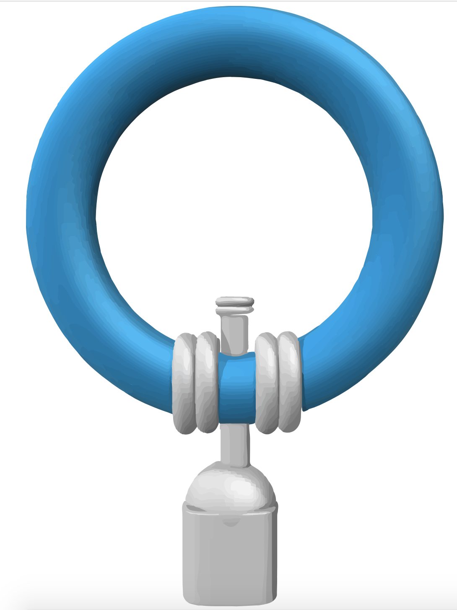 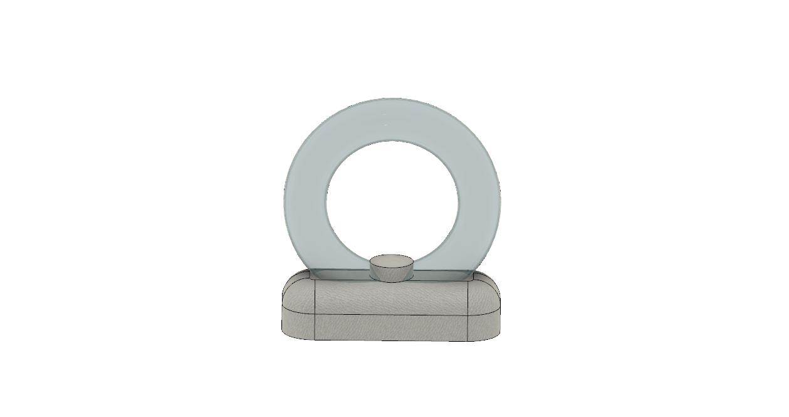Through mathematical modelling, the optimal dimensions and structure of the bulb were determined (click here for modelling details). The circular structure of the LIT bulb maximizes the exposure of Cyanobacteria to sunlight. A pump was introduced to ensure the cells remain suspended and the cell culture is homogeneously distributed throughout the LIT bulb. A three-way manual valve was introduced to allow for the easy replacement of media once every 12 months. A filter will be added to the valve to allow media to be replaced without removing the cell culture.
Biosafety and microbial containment considerations are of particular importance in the manufacturing design process of the LIT Bulb, as our product intends to coexist with the wider population as a source of public illumination.
The bulb has been designed to ensure biocontainment and prevent the interaction with our engineered microorganisms or their release into the environment.
The energy strain for the production of bioluminescence by our engineered E. coli cells is so large that they would be outcompeted quickly by other microorganisms if they were to be released in the environment.
Cyanobacteria will be engineered to secrete the glucose product from photosynthesis, thus they would be unable to sustain their growth when competing against other microbes in the environment if they were to be released.